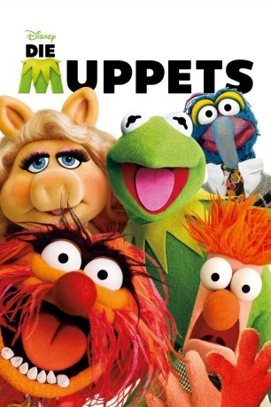
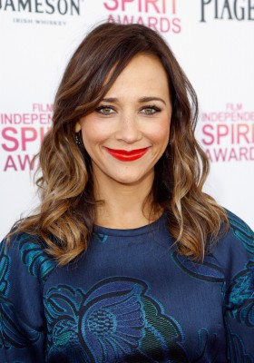
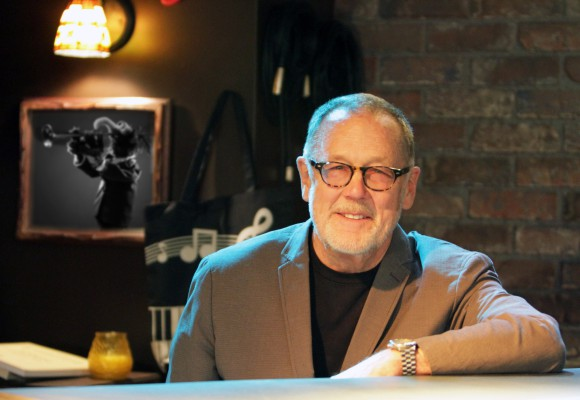
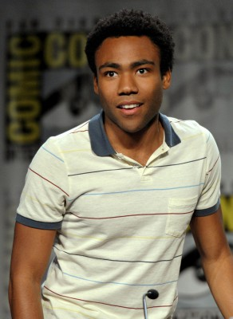
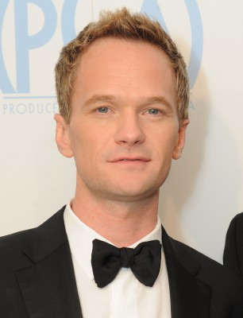
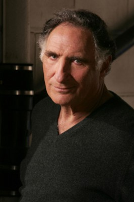
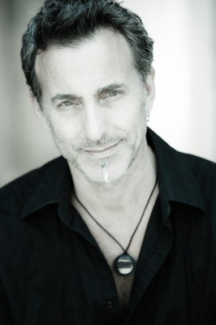

#773 Die Muppets
Alternativ: The Muppets
Auszeichnungen: 1 Oscars gewonnen
 
 IMDB-Wertung: 7.1 / 10
IMDB-Wertung: 7.1 / 10  Metascore: 75
Metascore: 75 
Walter ist der größte Fan der Muppets. Dass er selbst eine Puppe ist, blieb ihm und seinem großen Bruder Gary nicht verborgen, mit dem er, zum Leidwesen von Garys Freundin Amy, die meiste Zeit verbringt. Als ein Ölbaron den finsteren Plan schmiedet, das alte Studio der Muppets abzureißen, kommt Walters große Chance. Endlich kann er seine Idole nicht nur kennenlernen, sondern sie nach langer Trennung sogar wiedervereinen, um gemeinsam ihre Vergangenheit zu bewahren und ihnen vielleicht sogar eine Zukunft zu ermöglichen.
Jahr: 2011
Dauer: 103 Minuten
FSK:
Land: USA Studio: Walt Disney Studios Motion PicturesTonspuren: DTS - ,
Untertitel: Deutsch,
Auflösung: 1080p (1920x1080) Größe: 6430 MB
Genre: Abenteuer, Komödie, Familie, Musical
Regisseur: James Bobin
Drehbuch: Jason Segel, Nicholas Stoller, Jim Henson
Soundtrack: Christophe Beck
Darsteller:
 Jason Segel als Gary
Jason Segel als Gary Amy Adams als Mary
Amy Adams als Mary Chris Cooper als Tex Richman
Chris Cooper als Tex Richman-  Rashida Jones als CDE Executive
- Steve Whitmire als Kermit / Beaker / Statler / Rizzo / Link Hogthrob / The Newsman
- Eric Jacobson als Miss Piggy / Fozzie Bear / Animal / Sam Eagle / Marvin Suggs
-  Dave Goelz als Gonzo / Dr. Bunsen Honeydew / Zoot / Beauregard / Waldorf / Kermit Moopet
- Bill Barretta als Swedish Chef / Rowlf / Dr. Teeth / Pepe The Prawn / Bobo / Foozie Bear / Whatnot Farmer / Muppet Gary
- David Rudman als Scooter / Janice / Miss Poogy / Wayne
- Matt Vogel als Sgt. Floyd Pepper / Camilla / Sweetums / 80's Robot / Lew Zealand / Uncle Deadly / Rowlf Moopet / Crazy Harry
- Peter Linz als Walter
 Alan Arkin als Tour Guide
Alan Arkin als Tour Guide Bill Cobbs als Grandfather
Bill Cobbs als Grandfather Zach Galifianakis als Hobo Joe
Zach Galifianakis als Hobo Joe Ken Jeong als 'Punch Teacher' Host
Ken Jeong als 'Punch Teacher' Host Jim Parsons als Human Walter
Jim Parsons als Human Walter- Eddie Pepitone als Postman
 Kristen Schaal als Moderator
Kristen Schaal als Moderator Sarah Silverman als Greeter
Sarah Silverman als Greeter- Eddie 'Piolin' Sotelo als TV Executive
 Raymond Ma als Elderly Asian Man
Raymond Ma als Elderly Asian Man-  Donald Glover als Junior CDE Executive
- Dahlia Waingort als TV Executive
- Jonathan Palmer als Reporter One
- Don Yanan als Reporter Two
- Michael Albala als TV Executive
- Julia Marie Franzese als 'Punch Teacher' Kid
- Gunnar Smith als Gary Age 6
- Connor Gallagher als Gary Age 9
- Justin Marco als Gary Age 13
- Cameron Kasal als Laughing Kid
- Justin Tinucci als Laughing Kid
- Alex Long als Laughing Kid
- Aria Noelle Curzon als Waitress
 Emily Blunt als Miss Piggy's Receptionist
Emily Blunt als Miss Piggy's Receptionist- James Carville als James Carville
- Leslie Feist als Smalltown Resident
 Whoopi Goldberg als Herself
Whoopi Goldberg als Herself- Selena Gomez als Selena Gomez
- Dave Grohl als Cameo Performance - Animool
-  Neil Patrick Harris als Neil Patrick Harris
-  Judd Hirsch als Judd Hirsch
 John Krasinski als John Krasinski
John Krasinski als John Krasinski- Rico Rodriguez als Rico Rodriguez
 Mickey Rooney als Smalltown Resident
Mickey Rooney als Smalltown Resident- Michelan Sisti als Additional Muppet Performer
- Kevin Carlson als Additional Muppet Performer
- Tanya Haden als Additional Muppet Performer
-  James Murray als Additional Muppet Performer
- Michael Oosterom als Additional Muppet Performer
Datei: X:\Kinder Collections\Muppets\Muppets, Die (2011, FSK, 1920x1080).mkv seit 23.03.2015
Festplatte: Kinder-Filme+Trick
 Es gibt insgesamt 13 Filme in der Gruppe 'Kinder Collections\Muppets'
Es gibt insgesamt 13 Filme in der Gruppe 'Kinder Collections\Muppets'